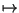
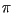

Das Übungsblatt besteht aus der Aufgabe 21, 22 und der Teamaufgabe 23 mit jeweils 4 Punkten.
Diese Aufgabe ist die Fortsetzung von Blatt 08, Aufgabe 20. Sie sollen jetzt die Konzepte von b) und c) zum Ableiten der Klassen Strecke, Kreis und Quadrat von der bereits entwickelten Oberklasse Punkt in die Praxis umsetzen, d.h. ein lauffähiges Java-Programm schreiben.
Neben den erforderlichen Konstruktoren sollen Sie insbesondere die in Blatt 08 beschriebenen Operationen Verschiebung, Skalierung und Dehnung/Stauchung bei den drei abgeleiteten Klassen realisieren (und ggf. auf entsprechende Operationen der Oberklasse zurückführen). Welche neuen get- und set-Methoden kommen in den drei abgeleiteten Klassen noch zu denen von Punkt hinzu?
Abzugeben sind der Java-Sourcecode und der Java-Bytecode der vier Klassen und eines kurzen Testprogramms.
Das folgende Java-Programm testet das sogenannte "constructor chaining" bei der Vererbung von Klassen.
Fügen Sie in alle vorhandenen Konstruktoren so früh wie möglich Ausgaben ein, die angeben, welcher Konstruktor welcher Klasse aufgerufen wurde. Bei den Klassen Quadrat und Rechteck soll zusätzlich noch die ID des aktuellen Objekts mit ausgeben werden. In den finalize()-Methoden soll eine Ausgabe eingefügt werden, für welche Klasse finalize() aufgerufen wurde und ggf. welches Objekt in Kürze freigegeben wird (durch die Ausgabe der ID).
Übersetzen Sie das Programm und erklären Sie detailliert die Ausgabe anhand des Sourcecodes.
Abzugeben ist der Java-Sourcecode und der zugehörige Bytecode sowie die detaillierte Kommentierung der Ausgabe per e-mail.
Eine Kurve in R2 ist eine Funktion
t  (x(t), y(t)),die durch zwei Koordinatenfunktionen x: [t0 , tN] R und y: [t0 , tN] R gegeben ist.
Beispiele:
Ein Kreis mit Mittelpunkt (mx , my) und
Radius r ist eine Kurve mit
x(t) = mx + r*cos(t), y(t) = my + r*sin(t) mit [t0 , tN] = [0, 2  ].Eine Strecke mit Anfangspunkt (px , py) und Endpunkt (qx , qy) ist eine Kurve
x(t) = px + t*(qx - px), y(t) = py + t*(qy - py) mit [t0 , tN] = [0, 1].
erforderliche Datenelemente:
Kurven sollen mit einer abstrakten Klasse Kurve realisiert werden,
die abgeleiteten Implementierungen durch die Klassen KreisKurve
und StreckenKurve. Die Klasse Kurve soll als
Datenelemente mindestens zwei Arrays haben, die die Koordinaten der
Kurvenpunkte
(x(ti), y(ti)), i = 0, 1, ..., N,aufnehmen. Sobald ein Objekt einer von Kurve abgeleiteten Klasse angelegt wird, sollen diese Arrays mit den Kurvenpunkten automatisch besetzt werden.
Entscheiden Sie, ob und welche anderen Datenelemente diese abstrakte Klasse besitzen soll.
erforderliche Methoden:
Eine Kurve kann um einen Vektor verschoben oder skaliert werden,
d.h. zu ihren Bestimmungsfunktionen x(.) und y(.) wird die
Verschiebungskomponente addiert bzw. der Skalierungsfaktor heranmultipliziert.
Entscheiden Sie, welche Methoden von Kurve abstrakt sind, wie diese in den Ableitungen realisiert werden und welche Methoden bereits in der abstrakten Klasse implementiert werden können.
Abzugeben sind der Java-Sourcecode und der Java-Bytecode mit den drei Klassen sowie einem kurzen Testprogramm.